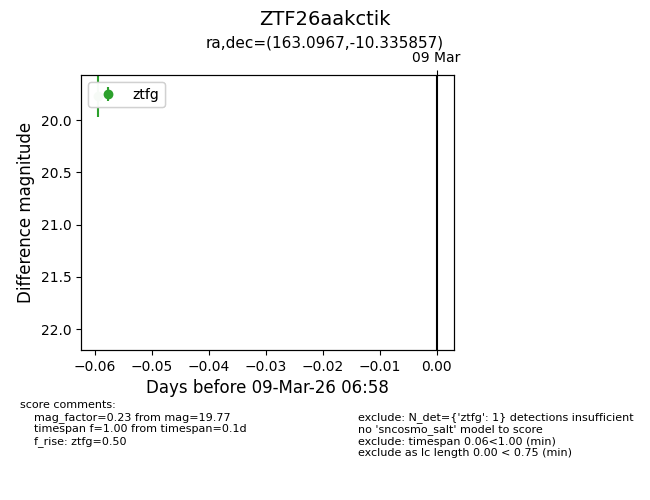
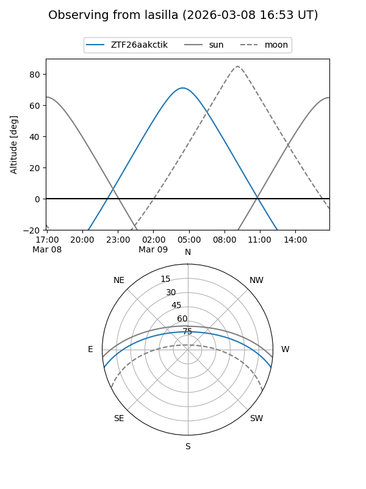
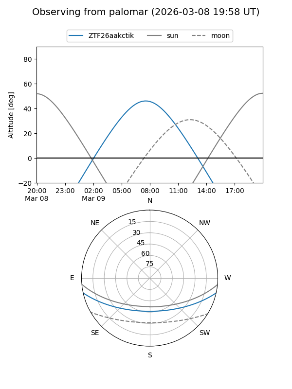

ZTF26aakctik
Target ZTF26aakctik at 2026-03-09 06:59
Aliases and brokers:
FINK: link
Lasair: link
ALeRCE: link
alt names
ZTF26aakctik (ztf,fink_ztf)
Coordinates:
equatorial (ra, dec) = 163.0967,-10.33586
equatorial (HMS+DMS) = 10:52:23.22,-10:20:09.09
galactic (l, b) = (261.2825,+42.70626)
Flags:
Photometry:
last ztfg=19.77
1 ztfg detections
Lightcurve

Visibility


Additional plots